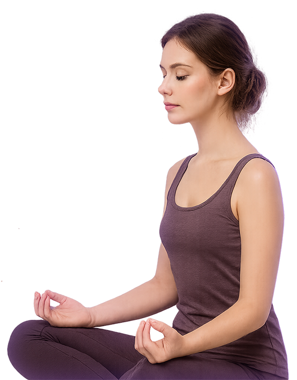

Dashboard proposal
Find the right psychic and start chat without scanning five identical shelves.
This HTML mockup keeps the dark NEURO mood from the stronger Figma direction, but rewrites the personal cabinet around one clear scenario: best match first, money contour visible, next action obvious.
Primary task: choose expert
Secondary task: continue chat
Visible payment contour
Why this structure is different
The original mock family proves the visual language. This version fixes the product issue: one hero scenario, fewer repeated category rails, denser expert cards, and stronger balance visibility.
Best matches for you
One strong first row instead of multiple near-duplicate blocks competing for attention.
Veronika
9 years of experience
16,752 consultations done
Strongest fit for relationship tension, mixed signals, and moments when the user wants one calm answer instead of another exploration loop.
Marina
12 years of experience
29,234 consultations done
Better choice for compatibility, pacing, and questions where the user needs pattern-reading and a more strategic next step.
Svetlana
7 years of experience
11,806 consultations done
Keep one adjacent option visible, but not as dominant as the first two. This preserves choice without returning the screen to catalog overload.
Continue where you left off
Last open thread: relationship reading with Marina. The cabinet should surface the fastest return path immediately after login instead of hiding it between marketing shelves.
Money contour
In the old family the payment block reads like a side widget. Here it is upgraded into a real operator block: visible balance, clear refill action, and a direct link to the next paid step.
Psychic of the day
Keep one emotional spotlight block, but make it support the main route rather than replace it.

Veronika
Love and relationship expert with a calm, direct tone. The featured block should answer one question: why start with this expert right now?
4.8 rating
online now
45 credits / min
Best for users who want less browsing and more certainty. The cabinet should reduce
uncertainty before asking for payment.
Why this block stays
The Figma family clearly wants a premium featured-psychic moment. Keep it, but only after the best-match row, so the screen still behaves like a dashboard rather than a repeating storefront.
Favorites and recent
Secondary surfaces should be quieter and denser than the hero route.
Saved experts
- Marina for compatibility and timing
- Veronika for direct emotional guidance
- Svetlana for career and numerology
Design handoff note
Use the dark aesthetic, but keep only four functional zones on desktop: sidebar, hero route, best-match row, and secondary support blocks. Do not stack five nearly identical expert shelves.